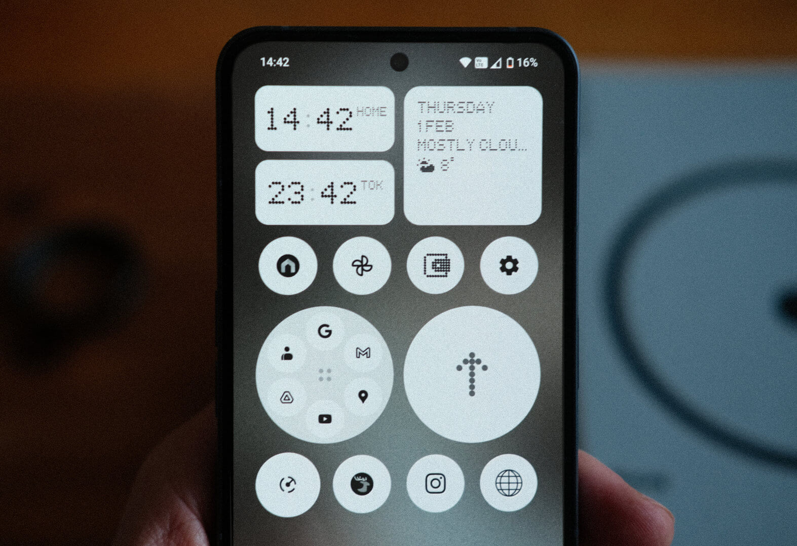
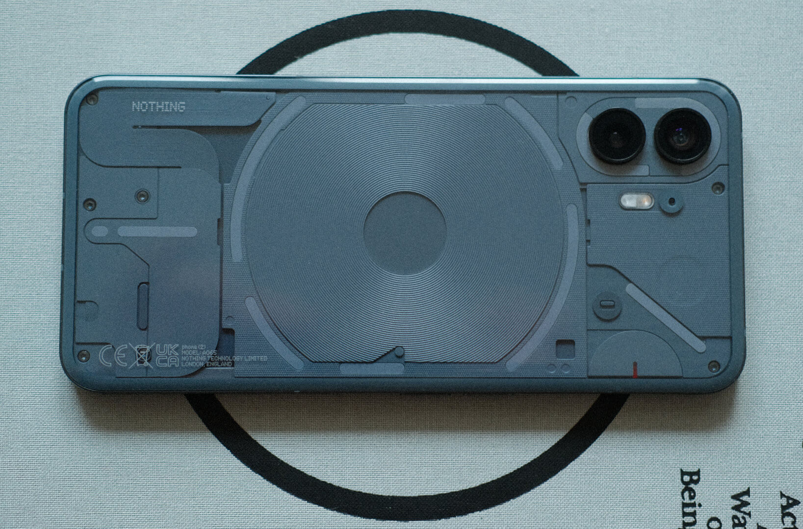
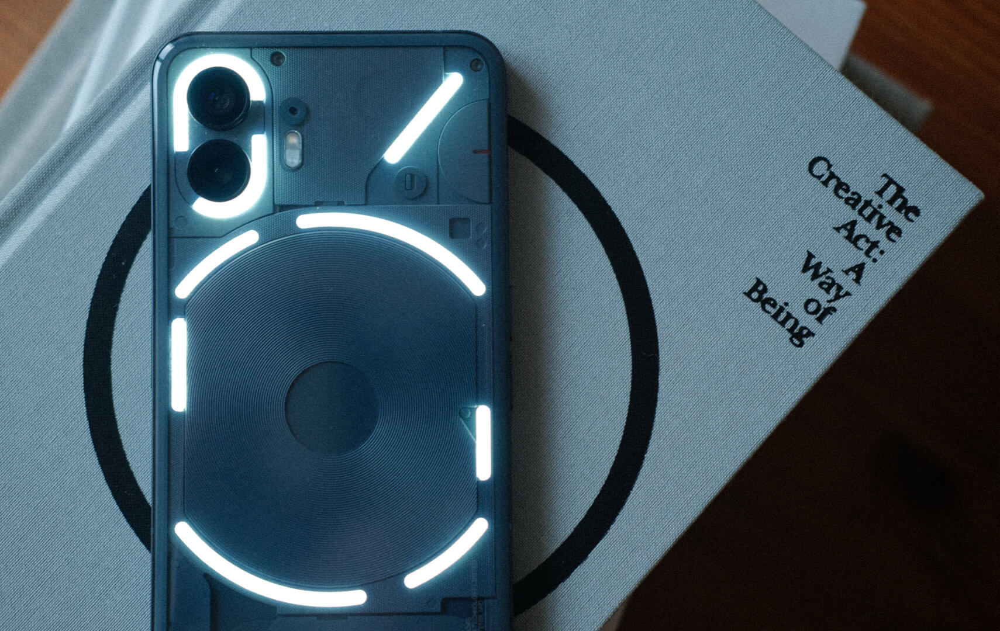
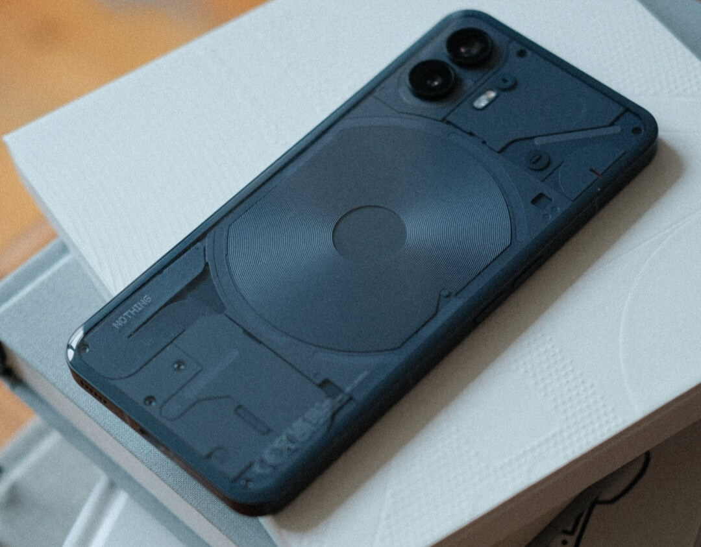

Getting something from Nothing .
In the last couple of years I have developed a complicated relationship with my phone. Whether it's scrolling past an endless wall of hate on Twitter or feeling my mood buckle under the weight of every TikTok or Reel that I push skywards, the tiny computer in my pocket has started to feel a bit like that box from Dune – there's nothing but pain in there.
Increasingly though, it's not just "in there" that's the problem. Over-reliance on my phone has often left me feeling like I'm not being forced to remember things as much as I'd like and the addictive nature of notifications means that I'm less present when my pocket starts to buzz. My hobbies have taken a hit too. Whilst I've always been keen on travel photography, I've noticed that on my recent trips I've been taking fewer and fewer photos with my camera. At the same time, I've taken hundreds of mediocre smartphone photos. The convenience of the phone in my pocket has started to outweigh the joy that I get from composing and shooting with the camera in my bag. Honestly, it's made me sad for all of the missed opportunities.
As much as I joke about disconnecting and running off to a cabin in the woods though, I'm still quite realistic that I do need a phone for modern life and work. There are many fantastic and necessary things that I love about having a smartphone to hand, I'd just like to use it a little less compulsively.
When my Samsung S21 literally and unceremoniously fell apart back in January of this year, I was confronted with the reality that I was going to have buy a new phone. But what do you buy when you want to use something capable, but much less frequently? Well, it turns out that there is a UK-based company called Nothing who pitch exactly that. As a "midrange" device the Nothing Phone 2 isn't as powerful as the latest iPhone or Samsung devices, but something that came up time and time again in reviews was that Nothing aim to help people to make more intentional use of their phones. That claim, along with the industrial design, sufficiently piqued my interest. After finding a great deal on the 512gb model, I decided to take a punt on it.
Tech has a real issue with chasing statistics and I'm always aware that, working in the industry, there can be a pressure to always have the latest and greatest device. After four weeks of use, I thought I'd share a few thoughts on taking a side-step.
Software that makes you want to stop .
Nothing's "use your phone less" ethos was undeniably appealing in choosing their device, but it remains questionable when a company is ultimately still in the market of selling phones. With that in mind, I'm pleasantly surprised that the Nothing Phone 2's OS actually makes good on some of the company's claims about minimising distractions.

Nothing OS is a light-touch skin over stock Android that adds just enough personality without reinventing the wheel. No emphasis on AI-driven nonsense and no pre-installed app bloatware; just a dot-matrix font and icons, some smart app-grouping options and a few useful widgets, all tied together with custom UI animations. Amusingly, those animations and transitions have a decent heft and easing to them which, despite the supposedly inferior chipset powering this phone, leaves the phone feeling snappy or, dare I say it, blazingly fast . It's all very refreshing to use.
The most important change for me though, is the focus on minimalism baked into the OS. You'll find a few accent colours dotted here and there, but my homescreen is now sparse to the point of being almost-monochrome. This design choice isn't just for the vibe though - instead of a multi-coloured wall of app icons and notifications bubbles just waiting to distract me, I now have a list of discreet black and white icons. Where a dedicated app icon isn't available, the OS applies a contrasty greyscale filter that, so far, hits more than it misses (check out the Elk icon in the photo above).
In practice, removing the colour from the icons means that the list of apps is harder to scan and the net result is that I'm spending less time compulsively hopping between apps. When the UI forces me to stop and read, my usage starts to feel more intentional. Chuck in a screen-time widget on the always-on display and I am genuinely finding that I'm unlocking my phone less frequently. Admittedly these are all subtle tweaks to the software but, given how much I've struggled to use my phone less, they come together to feel like a win.
So, a win for the software. But what about the hardware?
Business in front, party in the back .
In my opinion, Android phone designs in 2024 are wholly uninspiring. For a company that once released a phone in Thanos-chic purple and gold, Samsung's latest phones have been reduced to characterless monotone slabs. Then there's the latest Pixel phones from Google which look like a from-memory sketch of Daft Punk and are equally loaded with enough AI intrusions to make them seem Human After All.
The Phone 2 stuck out to me as doing things a little differently. With its sharp screen, uniform bezel and hole-punched camera the front looks a lot like an iPhone 15, but flip it over and the back is a different story.

The back of the Nothing Phone 2 is a glass panel that shows through to a design that hints at the interior components without actually showing them. The end result is a finish that is shiny and smooth yet, at the same time, the components underneath create a surprising amount of texture (something that made more sense when I learned that Teenage Engineering had a hand in Nothing's design language). The whole thing is surrounded by matte metal rails and yet remains surprisingly lightweight, given how solid the materials feel.
Then there are also the lights – sorry, the "Glyph".

The back glass of the phone is home to an excessive number of white LED lights that etch out a pattern which looks like it could have been part of some glitchy Channel 4 ident from 2001. Coincidentally, that's exactly what it sounds like too as the phone's sound design (by Swedish House Mafia) is straight out of the 56k modem school of music. Think: lots of glitchy pops, buzzes, cracks and clicks.
Look, I'll be real: these lights are an absolute gimmick and I'm so unconvinced by their actual utility as "distraction free" notification lights that I swiftly disabled them in the settings. At the same time though, I'm really glad they're here.
You see, comparing stats like chip speed, resolution and screen brightness will only get you so far but there's another side to any design that is much more unquantifiable - how the thing makes you feel . It's entirely subjective, but one of things that drew me to this phone is that the design reminds me of a very specific era of consumer electronics when hardware could be fun and wasn't so beholden to market expectations. I'm talking about the transparent Gameboy Color or the smoke-grey N64; Apple's first iMac and the legendary G4 Cube; Sony's burgundy-lacquered MZ-E620 MiniDisc Walkman and the aqua-camouflage Neo Geo Pocket; The goddamn WonderSwan .
The back of this device is leaning into the early-2000s transparent aesthetic and, to be honest, I'm here for it. Hardware design used to be weird, creative and exciting to me and the Nothing Phone taps back into that long-dormant part of my brain quite nicely. The first time I saw the back of my phone light up like a football pitch, I just had to smile at the absurdity. Somehow, it feels good.
Final thoughts .

So, should you buy this phone if you were already planning on getting the latest iPhone or Samsung? Probably not. I got this phone after deciding that it was right for my needs. If it seems like it might be right for you too then go for it.
I want to be realistic and step away from any brand Kool-aid though: This phone is far from perfect and the design won't speak to everyone. The back glass is slightly pillowed which makes it feel a lot thicker in the hand than it actually is. With a 6.7" screen, the phone sadly remains the size of a small horse . The camera (as every review quite fairly warned) has the distinction of being bang average in anything other than good light. And lastly, let's not forget that Nothing themselves are such a new company that there's no guarantee they'll still be around in 5-10 years.
One month in, though, and I'm really happy with my move to Nothing Phone 2. For my needs, the hardware has just enough charm that I'm feeling happy to reach for my phone again and, at the same time, the thought that has gone into the software is helping me to break my phone addiction. Despite the industry's obsession with comparable stats, I haven't personally noticed any lack of power either. In fact, when I look at the reasons for upgrading my previous phones it has always been because of battery degradation or running out of storage and never because of a lack of power. In that regard – with 2 days on a single charge and 4 times the storage of my last phone – the Nothing Phone has actually been something of an updegra.
The jury is out on whether or not my usage will creep back up over time, or if the battery-life will stay steady, but I'm already feeling less negativity about my phone. I'm also happy to report that the lacklustre camera is making sure that my Fujifilm isn't staying in its bag anymore. So far, at least, I'm pleased I went with Nothing.
Hi, my names is Sebas .
I'm a freelance creative developer helping awesome people to build ambitious yet accessible web projects.